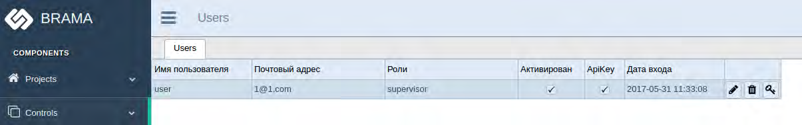
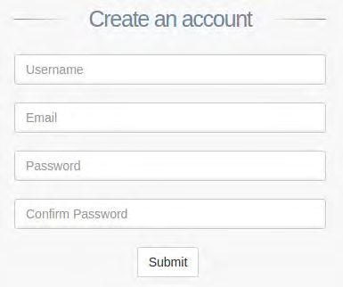
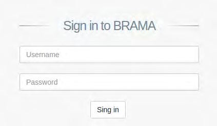
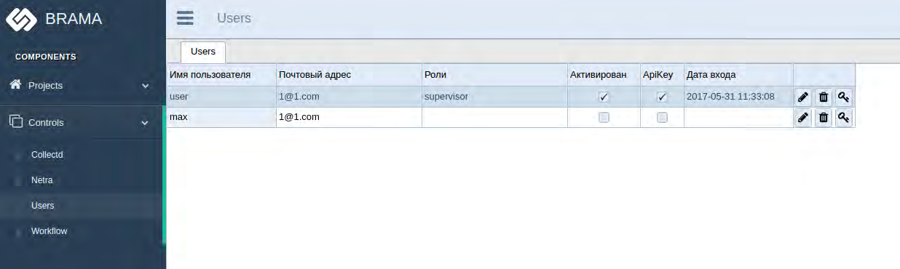
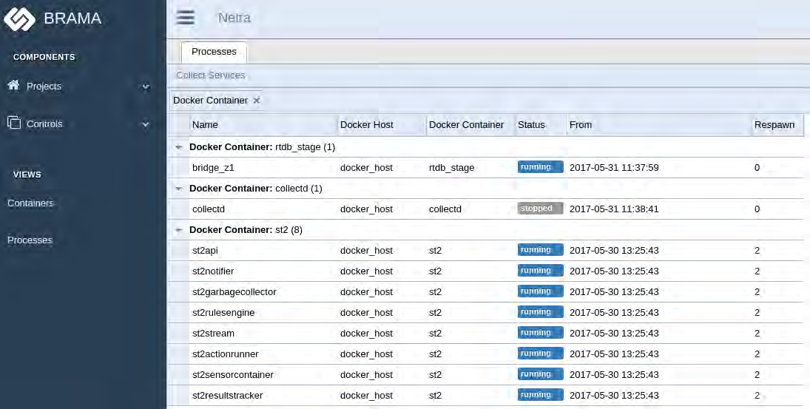
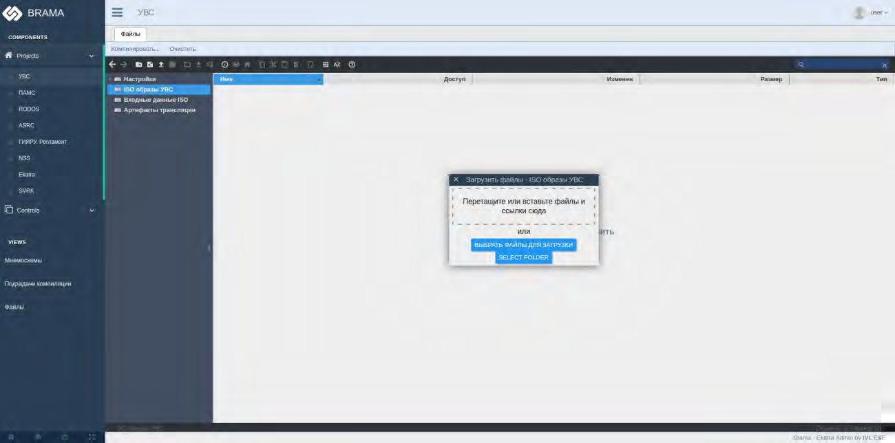
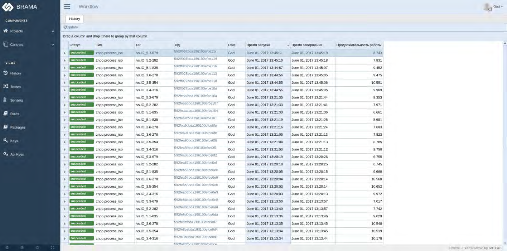
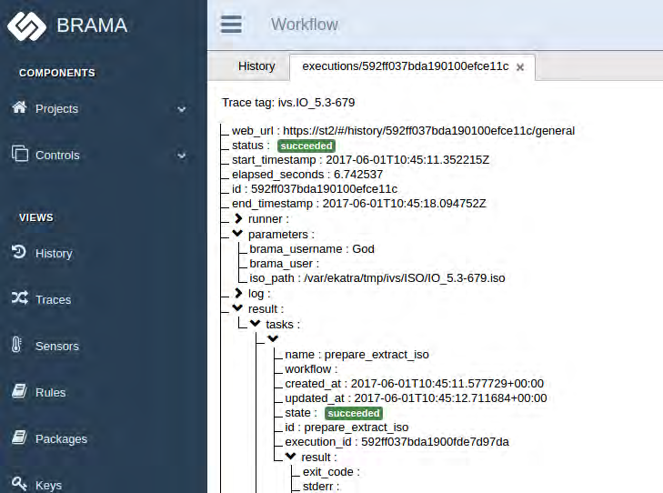
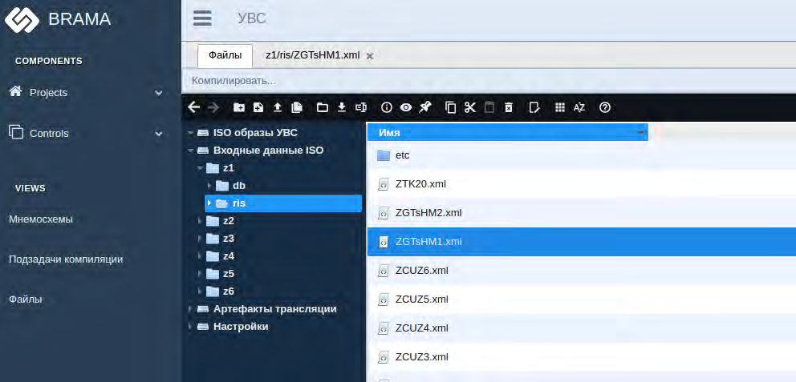
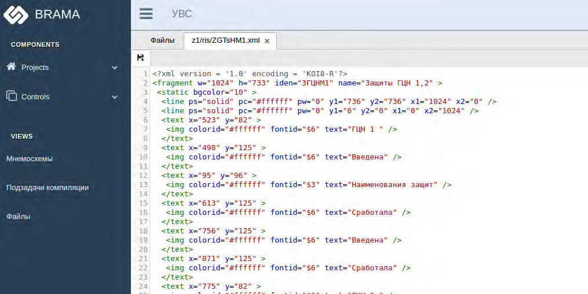

Администрирование прав пользователей системы выполняется с использованием приложения BRAMA.Для регистрации нового пользователя или изменения прав существующих, необходимо на АРМ запустить программу Google Chrome, набрав в поле адреса https://brama.znpp.cns.
В интерфейсе выбрать пункт «Users».
Список пользователей в системе отобразится в виде таблицы:

Рисунок 5.1 - Список пользователей системы в приложении BRAMA
Для регистрации нового пользователя необходимо выполнить следующие шаги:
Шаг 1 При помощи интерфейса программы вызвать окно регистрации пользователей:

Рисунок 5.2 - Окно регистрации пользователей
Шаг 2 Ввести имя учетной записи и пароль пользователя, нажать кнопку «Submit»
Шаг 3 Проверить возможность входа в систему под вновь созданной учетной записью:

Рисунок 5.3 - Окно входа для зарегистрированных пользователей
Шаг 4 Нажать кнопку «Sing in»
Шаг 5 Информация о новом пользователе должна отобразится в списке пользователей системы:

Рисунок 5.4 - Список пользователей системы после регистрации нового пользователя
Для первого входа в систему и активации первого зарегистрированного пользователя необходимо воспользоваться учетной записью «God».
Учетная запись «God» – это невидимый в системе администратор с неограниченными правами и её рекомендуется использовать только для активации первого пользователя и решения других нештатных ситуаций.
Для того, чтобы получить пароль от учетной записи «God» необходимо выполнить команду:
docker exec -it brama cat /var/ekatra/dbpasswordДалее необходимо войти в систему используя имя учетной записи «God» и пароль полученный выше.
Контроль состояния прикладного ПО выполняется с использованием приложения BRAMA.
Для проверки состояния на АРМ запустить программу Google Chrome, набрав в поле адреса http://brama.znpp.cns.
В интерфейсе пользователя выбрать пункт «Containers».
На экране будет отображен список docker-контейнеров системы и их текущее состояние:

Рисунок 5.5 - Список docker-контейнеров системы и их текущее состояние
Внесение изменений в базу данных и видеокадры в соответствии с изменениями, прошедшими в системах, источниках данных выполняется с помощью приложения BRAMA.
Для внесения изменений необходимо выполнить следующую последовательность шагов:
Шаг 1 запустить на АРМ программу Google Chrome, набрав в поле адреса http://brama.znpp.cns.
Шаг 2 Используя интерфейс программы выбрать экран управления ISO-образами УВС:

Рисунок 5.6 - Экран управления ISO-образами УВС
Шаг 3 Нажать кнопку «загрузить» и в открытом окне выбрать ISO-образ
Шаг 4 Выполнить загрузку ISO-образа, компиляция ISO-образа должна начаться автоматически
Шаг 5 открыть меню «History» и убедиться, что ISO-образ скомпилирован успешно – отображаемые статусы должны быть отмечены как «succeeded»:

Рисунок 5.7 - Меню «History»
Шаг 6 Для получения более подробной информации нажать два раза кнопкой мыши на строке, которая отображает информацию по ISO-образу
Шаг 7 На экране отображается информация о процессе компиляции:

Рисунок 5.8 - Информация о процессе компиляции ISO-образа
Шаг 8 Признаки «succeeded» означают, что процесс завершен успешно.
Просмотр отдельных скомпилированных видеокадров вызывается через меню “ris”:

Рисунок 5.9 - Просмотр отдельных скомпилированных видеокадров
Для проверки результата компиляции видеокадра необходимо выбрать видеокадр из предложенного списка.
На экране будет отображено текстовое описание скомпилированного видеокадра:

Рисунок 5.10 - Текстовое описание скомпилированного видеокадра